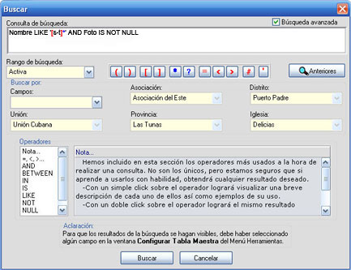

Búsqueda
El sistema de búsqueda de este software o programa es el internacionalmente conocido y renombrado SQL (Structured Query Language), lenguaje de preguntas estructurado, lenguajes que utilizan las bases de datos para pedir información de las mismas.
Figura 13. Búsqueda sencilla o simple.
Se muestra en la figura 13 la ventana de búsqueda por defecto, en ella podrá introducir la consulta o el texto, en este caso de una búsqueda sencilla por no estar seleccionada la casilla de Búsqueda avanzada, en cuyo caso la ventana cambiaría por la que se muestra en la figura 14.
La búsqueda sencilla se realiza sobre la iglesia activa, y no lleva campos (Nombre de cada columna de su base de datos: Nombre, Edad, Sexo…) ni operadores (and, xor, or...), es decir, simplemente ponga algo para buscar y busque, el motor de búsqueda encontrará todo lo que contenga la consulta en todos los campos de la base de datos.
Ejemplo de búsqueda sencilla o simple, figura 13: <<rosa>>
Encuentra Rosa como Nombre, de la Rosa como apellido, Calle Rosa como Dirección, etc., cualquier campo que tenga la palabra rosa.
Este tipo de búsqueda será el menos usual, no así con la búsqueda avanzada que estoy convencido le será de gran utilidad y con la que podrá obtener cualquier resultado deseado.
Nota: No damos en esta ayuda detalles de tipos de búsquedas con SQL, de él existen libros y más libros que puede obtener en cualquier lugar y en cualquier idioma. En realidad usted solo debe introducir del SQL en las consultas del programa lo que sigue a la cláusula Where, el programa se encarga de hacer lo demás en dependencia a lo que usted haya hecho con anterioridad.
Figura 14. Búsqueda avanzada.
Al observar la figura 14 puede notar la gran diferencia entre las dos ventanas de búsqueda (simple y avanzada), en esta última el uso de campos y operadores es indispensable.
Siempre habrá un rango de búsqueda seleccionado, en dependencia a lo que usted halla o no halla hecho, el rango de búsqueda que aparece cuando la venta se abre será el último que se efectúo, incluyendo el que se efectúa para la iglesia activa con doble clic o Enter sobre la iglesia (vea Explorador de Iglesias).
En total son tres rangos de búsqueda: Activa, Global y por Selección.
Activa: Se realiza sobre la iglesia activa, y el resultado de la consulta es editable, es decir, puede alterar o modificar, añadir y borrar registros.
Global: Se realiza a nivel de toda la base de datos, y el resultado de la consulta no es editable.
Selección: Se realiza a nivel de la selección que usted halla hecho en Buscar por, y el resultado de la consulta no es editable. Tiene que ir seleccionado las uniones, asociaciones, provincias, distritos e iglesias sobre las cuales quiere que se efectúe la consulta, un caso podría ser cuando usted desee buscar en todas las iglesias de su distrito, pues para ello seleccionaría la unión, la asociación, la provincia y su distrito, dejando en blanco Iglesias.
En Buscar por también aparece un apartado con el nombre Campos donde aparecen los campos sobre los cuales usted efectuará la búsqueda, usted puede teclear cada campo si así lo desea, solo que a expensa de errores, en cuyo caso no habrán resultados de búsqueda, para evitarlo se ha puesto esta posibilidad, simplemente haga clic (también funciona con Enter/Return y flecha arriba o flecha abajo del cursor) sobre el campo deseado y será adicionado al cuadro de búsqueda con los requisitos necesarios (corchetes en caso de que el campo contenga espacios en blanco, ejemplo [Primer Apellido]).
Se ha incluido además en esta ventana un apartado para los operadores, que dejamos en claro, no son los únicos, pero si sabe usarlos podrá obtener resultados asombrosos, haga combinaciones con ellos y verá.
Ejemplos visibles:

Figura 15. Ejemplo de búsqueda avanzada.
<<Nombre like '[s-t]*' AND Foto IS NOT NULL>>
Con esto le estamos diciendo al motor de búsquedas: encuentra todo Nombre que empiece desde la s hasta la t seguido de cualquier carácter, pero que además el campo Foto no esté vacío. El resultado sería el de la figura 16.
Figura 16. Resultado de búsqueda: Nombre like '[s-t]*' AND Foto IS NOT NULL
Figura 17. Ejemplo de búsqueda avanzada.
<<Edad>=8 AND Edad<=36 AND Foto IS NOT NULL>>
Le decimos al motor de búsqueda que encuentre los registros (en nuestro caso miembros de iglesia) que su edad esté entre 8 y 36 años (incluyendo 8 y 36 por el uso del operador =), pero además que no esté vacío su campo Foto.
Figura 18. Resultado de búsqueda: Edad>=8 AND Edad<=36 AND Foto IS NOT NULL.
Figura 19. Ejemplo de búsqueda avanzada.
<<[Fecha Bautismo]>=#1/1/2000# and [Fecha Bautismo]<=#31/12/2000#>>
Le decimos al motor de búsqueda que encuentre los miembros que fueron bautizados en el año 2000. Note que cuando pone una fecha debe encerrarla entre #, sin comillas.
Figura 20. Resultado de búsqueda: [Fecha Bautismo]>=#1/1/2000# and [Fecha Bautismo]<=#31/12/2000#.
Nota: En la ventana de búsqueda para la Tabla Maestra siempre debe existir la cadena a buscar, no así en la ventana de búsqueda de Importar/Exportar donde el no poner cadena de búsqueda sugiere que muestre todos los registros (miembros) de esa iglesia.
En la propia ventana de Búsqueda aparece una ayuda contextual, utilícela para más información.